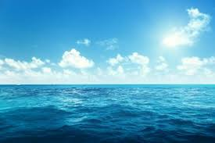

Ekosistem
Ekosistem merupakan sistem interaksi antara makhluk hidup sebagai (faktor genetik) dan lingkungan tempat hidup (faktor abiotik).
Ekosistem berdasarkan asal terbentuknya dibagi menjadi dua, yaitu ekosistem alami dan ekosistem buatan Ekosistem alami merupakan ekosistem yang terbentuk secara alamiah, tanpa campur tangan manusia. Tingkat keanekaragamannya tinggi contohnya: darat = Pantai, Gurun & perairan = Danau, Laut

Ekosistem buatan merupakan ekosistem yang terbentuk karena ada campur tangan manusia tingkat keanekaragamannya tinggi Contohnya: Sawah, bendungan atau waduk, tambak, hutan produksi

Kedudukan Makhluk Hidup 1. Produsen Produsen adalah makhluk hidup autotrof yang mampu menghasilkan makanan sendiri dan melakukan fotosintesis Contohnya: 1. darat = semua jenis tumbuhan hijau 2. Perairan= alga, pipa plankton, tumbuhan air 2. Konsumen Konsumen dibagi menjadi 3 Yaitu, konsumen primer, konsumen sekunder dan konsumen tersier. Konsumen primer terdiri dari organisme heterotrof yang memakan tumbuhan hijau, alga dan bakteri. Contohnya: darat = belalang, ulat, siput, sapi, domba, kelinci, merpati Konsumen sekunder merupakan karnivora pemakan konsumen primer Contohnya: darat : 1. Katak memangsa belalang 2. Singa memangsa hewan perumput Konsumen tersier adalah komponen puncak dalam piramida makanan Contohnya: 1. Darat ada burung elang yang memangsa ular 2. Di laut ikan hiu dan paus yang mangsa ikan-ikan kecil 3. Detritivor Merupakan makhluk hidup pemakan destri to seperti sampah hewan serasa dedaunan dan bangkai hewan yang dihasilkan oleh semua tingkat tropik Contohnya: Cacing tanah, jenis-jenis tikus, dan insekta yang memakan daun-daun busuk 4. Dekomposer Pengurai atau dekomposer dalam suatu ekosistem adalah bakteri dan jamur. Keduanya berperan besar dalam menguraikan bahan organik dari tumbuhan dan hewan yang telah mati menjadi bahan anorganik sederhana. Interaksi Makhluk Hidup Makhluk hidup yang ada di dalam satu ekosistem saling berinteraksi satu sama lain interaksi tersebut terbagi menjadi dua, yaitu: 1. Interaksi antara komponen biotik dan abiotik Contohnya: Keberadaan tumbuhan yang sangat mempengaruhi kondisi tanah 2. Interaksi antara komponen biotik dan biotik, terdiri dari 1. Kompetisi Contohnya: Harimau dan singa bersaing untuk mendapatkan rusa 2. Predasi Merupakan interaksi spesies pemakan dan spesies yang dimakan Contohnya: Tikus pemakan padi kucing memakan ikan 3. Simbiosis Terdiri dari 5 jenis yaitu: 1. simbiosis mutualisme Simbiosis mutualisme adalah simbiosis yang saling menguntungkan, contohnya bakteri ecoli dan usus manusia 2. Simbiosis komensalisme Pada simbiosis ini satu spesies diuntungkan sedangkan spesies lainnya tidak di untungkan dan tidak rugi, contohnya anggrek dengan tanaman inangnya 3. Simbiosis parasitisme Dalam simbiosis ini yang satunya untung dan yang satunya lagi rugi, contohnya benalu dan pohon mangga 4. Simbiosis emensialisme Pada simbiosis ini satu dirugikan dan sedangkan yang lain tidak untung dan tidak rugi, contohnya rumput teki dan tanaman pertanian 5. Netral artinya ialah Tidak saling mengganggu, contohnya interaksi pohon dan ular 4. Antibiosis Interaksi dua jenis makhluk hidup akan mengeluarkan racun untuk membunuh makhluk hidup lainnya, contohnya interaksi antara jamur penicillium dengan bakteri, jamur mengeluarkan antibiotik yang dapat membunuh bakteri. Aliran energi dalam ekosistem Dalam ekosistem terdapat aliran energi sebagai rangkaian urutan pemindahan energi dari satu tingkatan trofik ke tingkatan trofik berikutnya Tingkatan trofik merupakan kedudukan individu dalam suatu rantai makanan Trofik 1 = tumbuhan hijau (produsen) Trofik 2 = herbivora (pemakan tumbuhan) contohnya : kelinci trofik 3 = karnivora kecil pemakan herbivora, contohnya: ular dan singa trofik 4 = detritivor Rantai makanan Merupakan proses makan dan dimakan antara makhluk hidup berdasarkan urutan tertentu yang didalamnya terdapat peranan produsen konsumen dan detritivor Rantai makanan dibedakan menjadi dua yaitu rantai makanan perumput dan rantai makanan detritus 1. Rantai makanan perumput adalah rantai makanan yang diawali dari tumbuhan pada tingkat pertama 2. Sedangkan rantai makanan detritus iyalah rantai makanan yang diawali dari detrivor bukan tumbuhan tingkat pertamanya Jaring-jaring Makanan Jaring-jaring makanan adalah suatu sistem yang menunjukkan hubungan antara organisme yang berbeda dalam suatu ekosistem, berdasarkan pada pola makan dan dimakan. Jaring-jaring makanan menunjukkan bagaimana energi dan nutrisi mengalir melalui ekosistem. Komponen Jaring-Jaring Makanan 1. Produsen (Autotrof): Organisme yang dapat membuat makanan sendiri melalui fotosintesis, seperti tumbuhan dan algae. 2. Konsumen (Heterotrof): Organisme yang tidak dapat membuat makanan sendiri dan harus memakan organisme lain untuk bertahan hidup, seperti hewan dan manusia. 3. Pengurai (Dekomposer): Organisme yang memecah bahan organik menjadi nutrisi yang dapat digunakan oleh produsen, seperti bakteri dan jamur. Jenis-Jenis Jaring-Jaring Makanan 1. Jaring-Jaring Makanan Linear: Jaring-jaring makanan yang menunjukkan hubungan antara organisme dalam suatu rantai makanan yang lurus. 2. Jaring-Jaring Makanan Kompleks: Jaring-jaring makanan yang menunjukkan hubungan antara organisme dalam suatu ekosistem yang kompleks. Manfaat Jaring-Jaring Makanan 1. Mengatur Keseimbangan Ekosistem: Jaring-jaring makanan membantu mengatur keseimbangan ekosistem dengan mengatur populasi organisme. 2. Mengidentifikasi Hubungan Antara Organisme: Jaring-jaring makanan membantu mengidentifikasi hubungan antara organisme dalam suatu ekosistem. 3. Mengembangkan Strategi Konservasi: Jaring-jaring makanan dapat membantu mengembangkan strategi konservasi yang efektif dengan memahami hubungan antara organisme dalam suatu ekosistem. Contoh Jaring-Jaring Makanan 1. Ekosistem Hutan: Jaring-jaring makanan yang melibatkan tumbuhan, hewan, dan pengurai dalam suatu ekosistem hutan. 2. Ekosistem Laut: Jaring-jaring makanan yang melibatkan fitoplankton, zooplankton, ikan, dan pengurai dalam suatu ekosistem laut. Dalam kesimpulan, jaring-jaring makanan adalah suatu sistem yang kompleks yang menunjukkan hubungan antara organisme dalam suatu ekosistem. Memahami jaring-jaring makanan dapat membantu kita mengembangkan strategi konservasi yang efektif dan mengatur keseimbangan ekosistem.